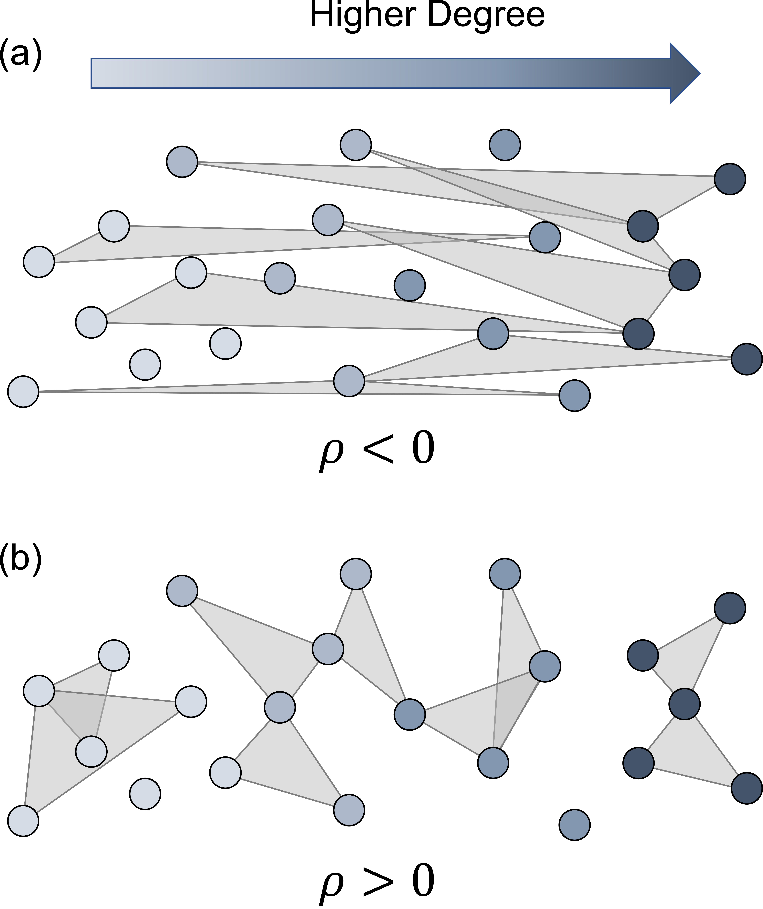
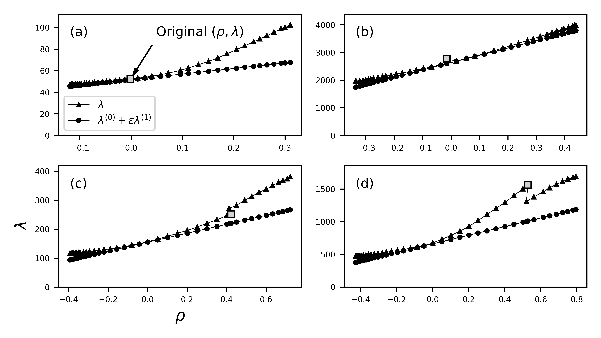
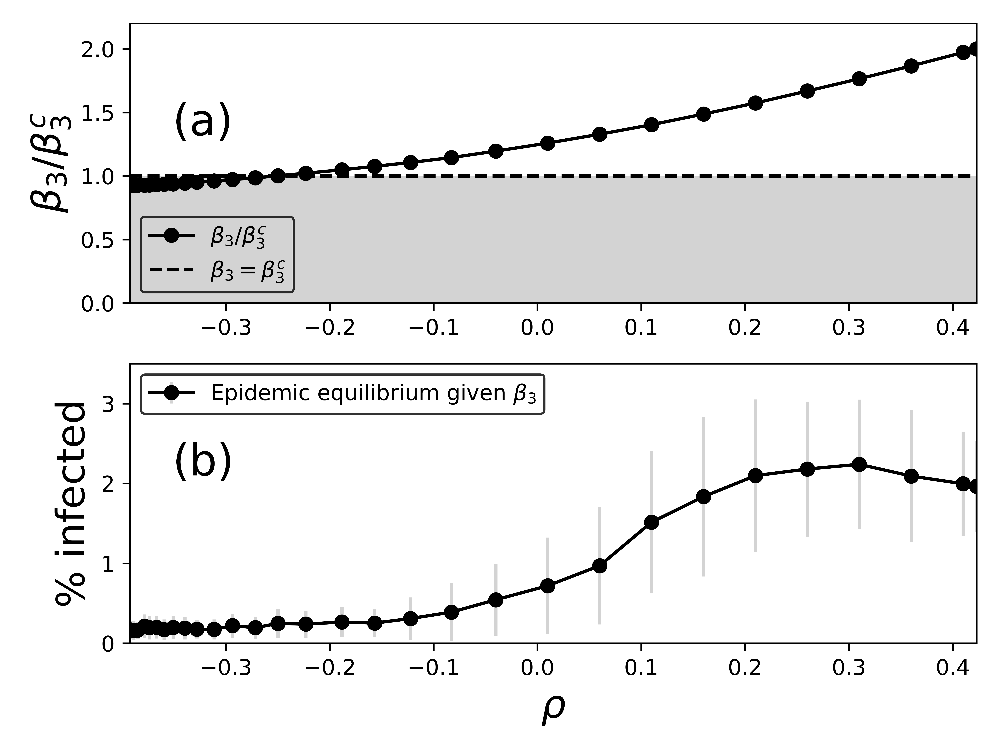

Hypergraph assortativity: a dynamical systems perspective
I’m excited to share that “Hypergraph assortativity: a dynamical systems perspective” with @Juanga_Restrepo is now out in Chaos as part of the Dynamics on Networks with Higher-Order Interactions special issue!.
Assortativity is the tendency of similar individuals to connect with one another more often than you’d expect if they connected at random. “Similarity” can be in terms of degree, age, sex, and many other attributes.

Assortativity in pairwise networks has been well-studied, but what about hypergraphs? There is great work out there quantifying assortativity in hypergraphs, but these definitions often aren’t explicitly related to dynamical processes.
We defined the “expansion eigenvalue” and showed that it’s meaningful in the prediction of extinction of epidemics for the hypergraph SIS model. We then used degree-based mean-field theory to approximate this eigenvalue for assortative hypergraphs.
We found that for uniform hypergraphs (hyperedges all the same size), we could derive an expression for degree assortativity that was related to the expansion eigenvalue and therefore to a dynamical process, which can be written as
\rho=\frac{\langle k\rangle^2 \langle k k_1\rangle_E}{\langle k^2\rangle^2} - 1.
Because this expression is meaningful in the context of dynamical systems, we call this quantity the “dynamical assortativity”.
We then used preferential double-edge swaps to increase/decrease the assortativity of empirical datasets. For small assortativity values, our prediction of the expansion eigenvalue matches the actual value closely for small enough assortativity values.

We found sharp transitions in the eigenvalue when rewiring empirical hypergraphs, which may indicate that there’s more structure at play than the degree sequence and the degree-degree mixing structure.
We can drastically decrease the eigenvalue by rewiring groups and “kill” epidemics by driving the system below the extinction threshold.
